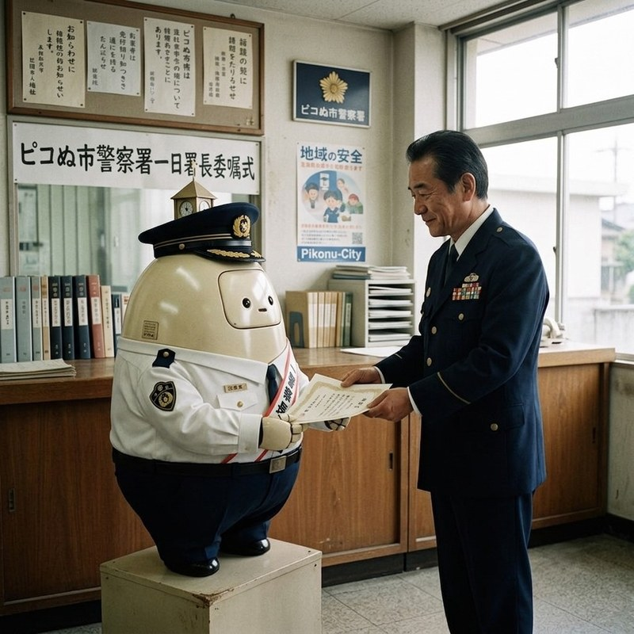

ピコぬ市警察署では、市内の安全を守る活動のほか、落とし物や行方不明に関する記録の 管理、市民の皆さまからの相談対応を行っています。目立つ出来事だけでなく、日々の 暮らしの中で失われた小さなものにも目を向け、安心して暮らせる街づくりに 取り組んでいます。
主な業務
落とし物記録
市内で届けられた落とし物について、持ち主へ返還できるよう記録・保管を行っています。 物には、それを持っていた人の時間や思い出が残されています。ピコぬ市警察署では、 単なる物品管理ではなく、大切な記録として取り扱っています。
行方不明記録の保護
人や物に関する行方不明情報について、関係機関と連携しながら記録の整理・保護を 行っています。過去の記録を大切に保存することで、新たな手がかりにつながる 場合があります。
デジタル安全相談
インターネットやデジタル機器に関する安全相談を受け付けています。
- 不審なメールや連絡への対応
- 個人情報の管理についての相談
- オンライン上のトラブル相談
など、市民の皆さまが安心してデジタル環境を利用できるよう支援しています。
市民相談
生活の中で感じる不安や困りごとについて相談を受け付けています。すぐに解決できない 問題についても、必要な機関と連携しながら対応します。
失われたものには、必ずそこにあった時間があります。ピコぬ市警察署では、事件や 事故への対応だけでなく、人や物に残された記録を守ることも大切な役割のひとつと 考えています。
活動記録
ピコぬくん 一日署長を務めました

市民の皆さまへの安全啓発活動の一環として、ピコぬ市公式キャラクター「ピコぬくん」が 一日署長を務めました。当日は、警察署内の見学や安全に関する案内、市民の皆さまとの 交流を行いました。ピコぬくんは、落とし物記録の確認や相談窓口の案内にも参加し、 警察署の役割について学びました。
※活動記録として保存しています。
施設情報
| 施設名 | ピコぬ市警察署 |
|---|---|
| 所在地 | ピコぬ市中央1丁目 |
| 受付時間 | 平日 8:30〜17:15 |
| 主な業務 | 落とし物・相談・安全対策 |